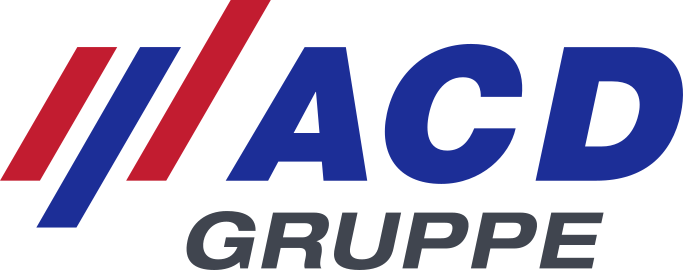

Infogérance préventive
pour cabinets comptables
Supervision, maintenance maîtrisée et support réactif pour protéger votre production et limiter les interruptions sur les postes, les serveurs et les outils métiers.
Quand l'informatique ralentit, toute la production du cabinet est exposée
L'enjeu n'est pas seulement de réparer. Il faut éviter les incidents récurrents, les lenteurs invisibles et les interventions au mauvais moment.
Pannes en période fiscale
Un incident serveur ou poste critique pendant la production peut immobiliser plusieurs collaborateurs en même temps.
Postes lents et mises à jour subies
Les ralentissements quotidiens, patchs mal pilotés et redémarrages non maîtrisés dégradent la continuité de travail.
Support trop réactif, jamais préventif
Sans supervision ni routines de contrôle, les mêmes problèmes reviennent et l'équipe subit au lieu d'anticiper.
Une infogérance pensée pour éviter l'incident avant qu'il ne bloque vos équipes
L'objectif est simple : garder votre environnement disponible, piloté et plus prévisible au quotidien.
Supervision & alerting
Surveillance continue des signaux faibles pour agir avant l'interruption, avec une lecture claire des incidents prioritaires.
-
Supervision postes, serveurs et services critiques -
Alertes hiérarchisées et exploitables -
Détection précoce des anomalies récurrentes
Maintenance & patching
Mises à jour encadrées, contrôles réguliers et interventions planifiées pour éviter les surprises en production.
-
Patching maîtrisé postes et serveurs -
Vérifications de santé et routines de contrôle -
Réduction des causes de lenteur et d'instabilité
Support & continuité d'exploitation
Prise en charge rapide des incidents et arbitrage clair pour maintenir la disponibilité des équipes et des applications métier.
-
Priorisation des incidents bloquants -
Escalade structurée et suivi des actions -
Continuité d'exploitation orientée production
Une méthode d'ingénierie appliquée à votre infrastructure
L'infogérance est pilotée avec une logique de documentation, de visibilité et de réduction du risque. L'objectif n'est pas seulement d'intervenir, mais de stabiliser durablement.
Une infogérance pilotée, documentée et orientée production
Chaque étape vise à réduire le risque opérationnel et à donner de la visibilité sur l'état réel de votre environnement.
Compatible avec les outils et usages de votre cabinet
L'infogérance doit s'aligner sur vos logiciels métiers, vos usages collaboratifs et votre rythme de production, pas l'inverse.



Des résultats visibles sur la disponibilité, la sécurité et le confort de travail
Une infogérance utile se mesure à l'impact concret sur le quotidien du cabinet, pas à la seule quantité d'interventions. Pour une vue globale de l'offre, consultez aussi nos services informatiques pour cabinets comptables.
Faites le point sur votre infogérance en 15 minutes
Un échange court pour identifier les risques prioritaires, les points de fragilité et les premières actions utiles pour votre cabinet.
Ouverture du calendrier en plein écran
FAQ — Infogérance
Des réponses directes sur le périmètre, les urgences, la reprise d'existant et la compatibilité avec vos outils.
La prestation couvre la supervision des éléments critiques, le patching, les routines de contrôle, la gestion des incidents et le suivi des actions prioritaires.
Oui. L'organisation vise à réduire l'impact en production avec diagnostic rapide, priorisation claire, communication continue et actions documentées.
La reprise commence par un état des lieux, l'identification des risques majeurs, la documentation du contexte puis un plan d'actions progressif.
Oui. L'approche consiste à fiabiliser l'environnement d'exploitation pour améliorer la stabilité et la disponibilité de vos applications métier existantes.